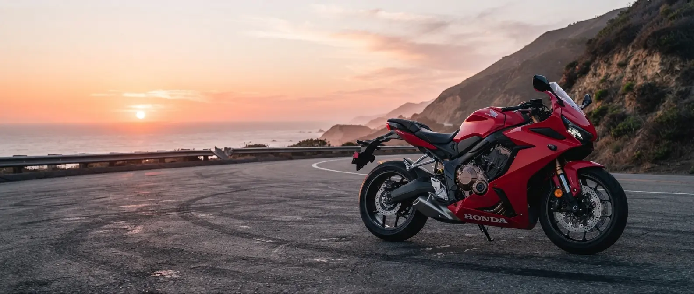

EL MODELO
Una deportiva de cuatro cilindros
La Honda CBR650R combina una carrocería carenada con un motor de cuatro cilindros en línea. En esta página tomamos como referencia la versión E-Clutch 2026 de 70 kW.
Su motor de 649 cm³ utiliza refrigeración líquida y una distribución de doble árbol de levas en cabeza. La potencia máxima llega a 12 000 revoluciones por minuto.
Ficha técnica
| Característica | Especificación |
|---|---|
| Motor | Cuatro cilindros en línea y 16 válvulas |
| Cilindrada | 649 cm³ |
| Potencia máxima | 70 kW a 12 000 rpm |
| Par máximo | 63 N·m a 9 500 rpm |
| Caja de cambios | Seis velocidades |
| Transmisión final | Cadena |
| Peso en orden de marcha | 211 kg en la versión E-Clutch |
| Altura del asiento | 810 mm |
| Depósito | 15,4 litros |
| Datos correspondientes a la versión indicada. | |
SU TECNOLOGÍA
¿Qué aporta E-Clutch?
E-Clutch gestiona electrónicamente el embrague. Permite arrancar, detenerse y cambiar de marcha sin accionar su maneta, aunque el conductor sigue seleccionando las marchas mediante el pedal.
No convierte la caja en automática. El piloto también puede utilizar la maneta para intervenir manualmente.
Entender E-Clutch